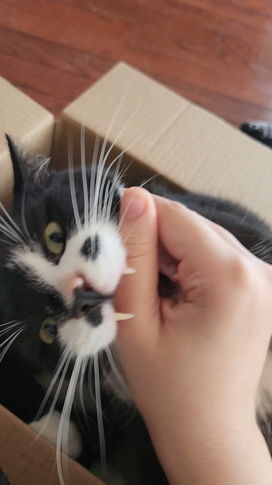
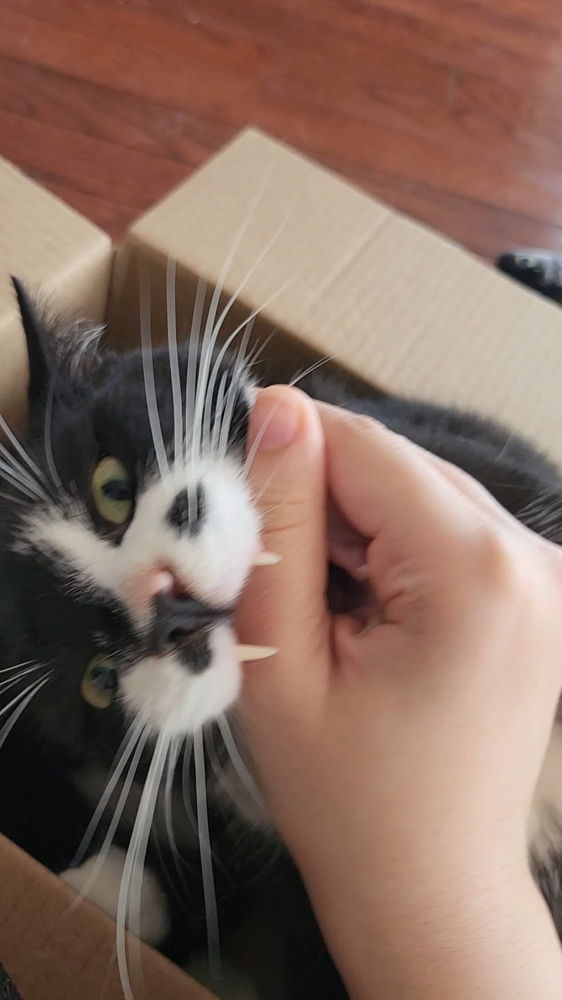

Overview
Nomu & Milo Photography focuses on natural pet photography. Each photo session captures movement, emotion, and personality rather than a forced posed photo. Inspired by the bond between my own cats, this project values candid photos to keep as a memory.

Approach
- Unposed imagery that highlights your pets genuine behavior.
- Natural lights and backgrounds to show case your cats natural enviroments.
- Creative compositions influenced by candid, everyday moments.
Each session is adapted to your pets comfort level, allowing the environment to shape the outcome naturally.
Gallery
 

A quiet interaction between Nomu and Milo captured during an early morning session.
Booking
Interested in a session? Schedule a shoot!
Book NowCredits
- Website by Ayesha Hussain (IMD1000)
- Logo created by Ayesha Hussain on Ibis Paint X
- All images and video captured by Ayesha Hussain
- Coded in Visual Studio Code and hosted on NeoCities